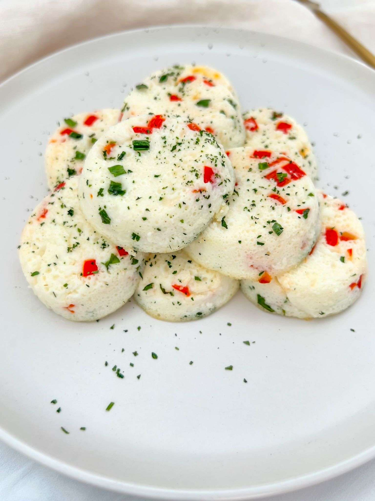

Healthy Egg White Bites

Description
These egg bites are so light and delicious and are a healthy
alternative to fast food bought items.
This recipe makes approximately 6 muffin sized bites. Egg whites are
called, but the whole eggs can also be used, though cook time may differ.
Ingredients
You will need:
- 1 Cup of Egg Whites
- Salt
- Shredded Cheese
- Oil
- Optional: Vegetables
- Diced Onions
- Chopped Spinach
- Chopped Tomatoes
- Chopped Bell Pepper
- Chives
Steps
Preparing the Veggies
- If veggies are being used, dice the onions evenly and chop the
rest. These will not only give the egg bites a beutiful color,
but also gives them a pleasant aroma.
-
Add a tablespoon of oil to a pan, an heat for a minute. Lightly
salt the chopped onions and stir fry them at medium-low heat until
soft and lighly yellow. Once the onions are ready, add the bell
pepper and tomatoes until soft and there is very little liquid
remaining in them. Finally, add the spinach until most of the liquid
is gone. This will prevent the egg bites from being soggy.
Preheating the Oven
-
Prepare a water bath in the oven. This imitates a sous vide cooking
style, which gives the egg whites a firm and delicate texture.
What I like to do is to fill a pan halfway with water and place it in
the bottom rack while the oven preheats. Preheat your oven to 375°F.
While your oven gets ready you can prepare your muffin tins.
Preparing to Mix
-
The egg mix is simple, it's only the egg whites with salt. What
you can do is oil the muffin tins and then evenly distribute your
veggies on each. Add as much shredded cheese to each tin as you like.
Afterward you can pour the egg white mixture in (almost to the top).
Baking
-
Place the pan in the middle rack and bake until the egg whites are cooked.
They will be ready once firm (approximately 20 minutes).
Finishing
-
Take the pan out out of the oven and leave to cool for at least 5 minutes.
Once they egg white bites are cooled and firm, they can gently be removed
from the tins.
-
If you wish, you may add chopped chives as a garnish to the egg white bites.
At this point, they are ready to enjoy!
Conclusion
As you can see, this recipe is an easy and tasty recipe to save time in the
morning while on the go. It is also nutritious as it contains a great amount
of protein and a lower amount of calories than a breakfast sandwich (especially
from fast food)!
Thank you for your consideration in this recipe! - Jose C.
Back to homepage